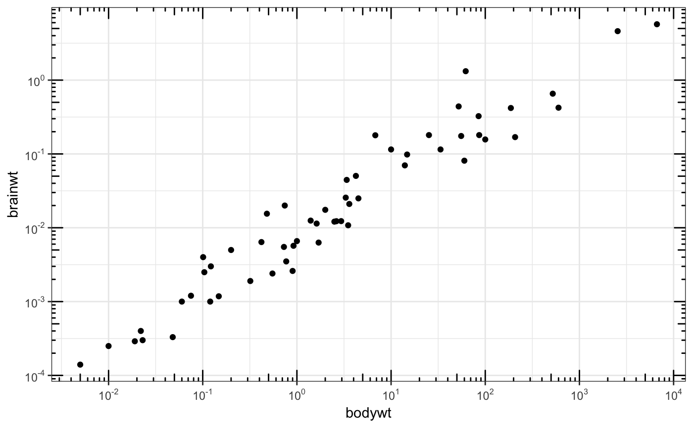

This annotation adds log tick marks with diminishing spacing. These tick marks probably make sense only for base 10.
annotation_logticks(base = 10, sides = "bl", scaled = TRUE, short = unit(0.1, "cm"), mid = unit(0.2, "cm"), long = unit(0.3, "cm"), colour = "black", size = 0.5, linetype = 1, alpha = 1, color = NULL, ...)
the base of the log (default 10)
a string that controls which sides of the plot the log ticks appear on.
It can be set to a string containing any of "trbl", for top, right,
bottom, and left.
is the data already log-scaled? This should be TRUE
(default) when the data is already transformed with log10() or when
using scale_y_log10. It should be FALSE when using
coord_trans(y = "log10").
a unit object specifying the length of the
short tick marks
a unit object specifying the length of the
middle tick marks. In base 10, these are the "5" ticks.
a unit object specifying the length of the
long tick marks. In base 10, these are the "1" (or "10") ticks.
Colour of the tick marks.
Thickness of tick marks, in mm.
Linetype of tick marks (solid, dashed, etc.)
The transparency of the tick marks.
An alias for colour.
Other parameters passed on to the layer
scale_y_continuous, scale_y_log10 for log scale
transformations.
coord_trans for log coordinate transformations.
# Make a log-log plot (without log ticks) a <- ggplot(msleep, aes(bodywt, brainwt)) + geom_point(na.rm = TRUE) + scale_x_log10( breaks = scales::trans_breaks("log10", function(x) 10^x), labels = scales::trans_format("log10", scales::math_format(10^.x)) ) + scale_y_log10( breaks = scales::trans_breaks("log10", function(x) 10^x), labels = scales::trans_format("log10", scales::math_format(10^.x)) ) + theme_bw() a + annotation_logticks() # Default: log ticks on bottom and left#> Error in grid.Call(L_textBounds, as.graphicsAnnot(x$label), x$x, x$y, resolveHJust(x$just, x$hjust), resolveVJust(x$just, x$vjust), x$rot, 0): polygon edge not founda + annotation_logticks(sides = "lr") # Log ticks for y, on left and right a + annotation_logticks(sides = "trbl") # All four sides#> Error in grid.Call(L_textBounds, as.graphicsAnnot(x$label), x$x, x$y, resolveHJust(x$just, x$hjust), resolveVJust(x$just, x$vjust), x$rot, 0): polygon edge not found# Hide the minor grid lines because they don't align with the ticks a + annotation_logticks(sides = "trbl") + theme(panel.grid.minor = element_blank()) # Another way to get the same results as 'a' above: log-transform the data before # plotting it. Also hide the minor grid lines. b <- ggplot(msleep, aes(log10(bodywt), log10(brainwt))) + geom_point(na.rm = TRUE) + scale_x_continuous(name = "body", labels = scales::math_format(10^.x)) + scale_y_continuous(name = "brain", labels = scales::math_format(10^.x)) + theme_bw() + theme(panel.grid.minor = element_blank()) b + annotation_logticks() # Using a coordinate transform requires scaled = FALSE t <- ggplot(msleep, aes(bodywt, brainwt)) + geom_point() + coord_trans(x = "log10", y = "log10") + theme_bw() t + annotation_logticks(scaled = FALSE)#> Warning: Removed 27 rows containing missing values (geom_point).# Change the length of the ticks a + annotation_logticks( short = unit(.5,"mm"), mid = unit(3,"mm"), long = unit(4,"mm") )#> Error in grid.Call(L_textBounds, as.graphicsAnnot(x$label), x$x, x$y, resolveHJust(x$just, x$hjust), resolveVJust(x$just, x$vjust), x$rot, 0): polygon edge not found